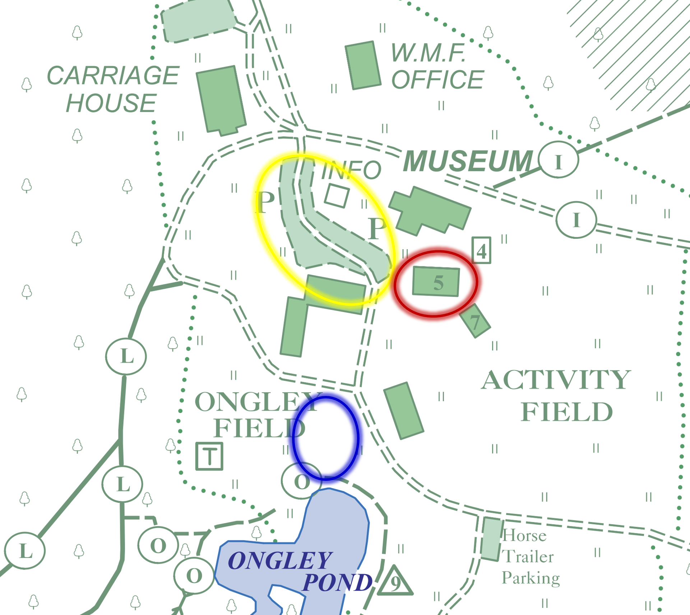

Ray Dayton and Kaiden Price Wedding
Saturday, October 18 2025, 2PM
White Memorial Conservation Center, Litchfield, CT
Your favorite navigation app should get you to the entrance to the White Memorial Conservation Center; we will have signs directing you beyond that point. In the pictures below, parking for the wedding is circled in yellow, behind the museum. The wedding ceremony will be held in the field near Ongley Pond (circled in blue); the reception will be held in the Activity Shed behind the museum (circled in red).


Home ~
RSVP ~
Kaiden & Ray ~
Registry